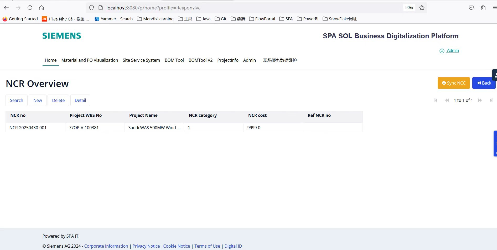

焦

焦炫玮
AI 算法应用工程师作为一名拥有机械工程底色的技术实践者，我致力于探索前沿算法在自动驾驶与工业智能领域的落地应用。在四段核心Co-op实训中，我积累了极具竞争力的跨界研发经验：不仅掌握了自动驾驶场景下的3D目标检测技术，还深入实践了基于 BEV（鸟瞰图）架构的自动驾驶感知与场景理解，并能通过低代码开发实现系统的快速迭代与交付。从机械原理的底层解构到复杂算法的现场部署，我打通了端到端的工程闭环，期待在智能化时代持续释放技术价值。
📞
13357791222
✉️
jiaoxi@mail.uc.edu
核心实习与项目
2025.01 - 2025.04 | 第四次 Co-op
重庆大学机械与运载工程学院
科研实习生
- 顶刊论文精读与复现： 深度精读并分析数十篇中科院1区顶刊论文，涵盖 BEV 感知、多传感器融合等前沿领域；独立复现多项核心算法，深入理解其数理建模与工程实现细节。
- BEV 技术深度综述： 系统性完成了自动驾驶鸟瞰图（BEV）感知方案的文献综述，深入调研了空间变换、时序融合及特征提取等关键技术演进脉络，产出了高质量调研报告。
- DualBEV 模型改进： 针对 DualBEV 架构进行深入研究与代码修改，优化了其空间转换层与视角关联逻辑，探索了在复杂路况下感知精度与计算效率的平衡点。
2025.09 - 2025.12 | 第三次 Co-op
南京西门子
IT部门实习生
- 企业级系统敏捷研发： 深入公司数字化转型进程，熟练运用 Mendix 平台主导开发“Outing”出游管理系统。通过模块化设计，实现了包含路线投票、一键报名、行程资源管理等五大核心模块的一体化流程，大幅提升了企业活动组织效率。
- 复杂底层逻辑攻坚： 在 CheckTrack 项目中独立攻克 Evidence 上传/下载的技术难点，深入剖析并重构底层微流（Microflow）逻辑。针对用户新需求，成功构建数据关系映射模型，实现了高鲁棒性的 Excel 数据自动化导入功能。
- AI 赋能数字化开发： 创新性地将 DeepSeek 等 AI 工具深度融入低代码开发链路。通过高阶 Prompt 提问技巧与 AI 进行逻辑交互，快速攻克数据交互异常、微流逻辑优化等技术瓶颈，显著提升了代码构建质量与交付速率。

2024.05 - 2024.08 | 第二次 Co-op
南京西门子
IT部门实习生
- 企业级低代码开发： 深入参与西门子内部数字化转型实践。熟练运用 Mendix 平台进行系统建模、微流（Microflow）逻辑设计及页面开发，实现业务需求的敏捷响应与快速交付。
- “设备借用”管理系统主导： 独立负责公司级“设备借用”管理项目的全生命周期开发。通过模块化设计实现了资产实时追踪、多级审批流自动化及用户权限管理，显著提升了部门间资源调配的效率。
- IT 流程与数字化协同： 在跨国企业标准 IT 框架下开展工作，负责前端交互优化与后台数据逻辑集成；通过低代码平台打通业务痛点，产出了具有高易用性的数字化工具。
2024.01 - 2024.04 | 第一次 Co-op
重庆大学机械与运载工程学院
科研实习生（齿轮故障）
- 软硬协同交互：负责第三代智能二维上肢康复机器人(KF-3)的控制界面搭建，基于 C# 实现双伺服电机运动系统的医疗引导交互模拟。
- 底层硬件调试：搭建底层模拟电路，独立排查并解决数据采集卡(MP4623)驱动冲突及步进电机细分速率衰减问题，实现力学传感信号的高精采集。
教育背景
重庆大学 - 辛辛那提大学联合学院 (JCI)
时间： 2022.09 - 2026.06
核心课程： 微积分I(满绩)、固体力学(满绩)、机械原理(满绩)、Matlab编程、流体力学、信号系统控制等。
学生工作： ME01学习委员，UC联合学院综合事务处副部长。
专业技能
算法与软件开发 (Hard Skills)
大语言模型应用 (LLM / Prompt / Agent)
Python / C++ / C#
深度学习与强化学习 (LSTM/Transformer/PPO)
自动驾驶感知 (BEV / 3D目标检测)
Mendix 低代码开发
UiPath / Power BI / Power Apps
工程建模与质量控制 (Engineering)
MATLAB 数值仿真与数据清洗
质量管理与数理分析 (SPC/MSA/Minitab)
3D 结构建模 (SolidWorks / UG-NX)
3D 打印技术与测试工装设计
综合软实力 (Soft Skills)
跨学科知识整合与应用落地
英语专业文献检索与技术写作 (CET-4/CET-6)
全链路工程思维
跨部门高效沟通与协作
证书与荣誉
学业表彰与奖学金
连续三学年荣获重庆大学奖学金。
重庆大学数学建模竞赛二等奖
带领团队通过跨学科建模与分析，解决复杂问题，展现优秀的数学应用与团队协作能力。